as a designer, ivan gets invested in a project as if he were its co-founder. he hates bad details as much as he hates the regime.
mostly corporate work lately, but his dream of working in sports hasn’t faded one stitch (pun intended)
Welcome to
House of Pambudi

as a designer, ivan gets invested in a project as if he were its co-founder. he hates bad details as much as he hates the regime.
mostly corporate work lately, but his dream of working in sports hasn’t faded one stitch (pun intended)
Click or tap to stitch a random motif. Right-click, long-press, or press Shift F10 to switch to Free stitch or undo and redo. In Free stitch, click or drag to draw individual stitches. Use arrow keys to choose a spot and Enter or Space to stitch. Reload for a clean surface.